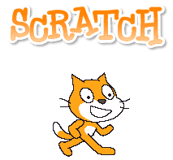

Resources
This section contains information about different resources that helps me to perform better.
.:For Outreach:.
-  Scratch: Scratch is a programming language that makes it easy to create your own interactive stories,
animations,games, music, and art and share your creations on the web. As young people create and share Scratch projects, they learn important
mathematical and computational ideas, while also learning to think creatively, reason systematically, and work collaboratively.
- Alice: Alice is an innovative 3D programming environment that makes it easy to create an animation for telling a story, playing an
interactive game, or a video to share on the web. Alice is a freely available teaching tool designed to be a student's first exposure to
object oriented programming. It allows students to learn fundamental programming concepts in the context of creating animated movies and simple video games.
In Alice, 3D objects (e.g., people, animals, and vehicles) populate a virtual world and students create a program to animate the objects.
- GameMaker: Studio IDE has everything that you need to deal with fonts,
sounds, images and music, as well as other resources that you may need for creating your game. It enables you to define game entities, known as
'objects', and their behaviours in an intuitive, event-driven way and has an easy-to-use drag-and-drop interface.
.:For Students:.
- NSF: The National Science Foundation supports an average of about 200,000 scientists, engineers,
educators and students at universities, laboratories and field sites all over the United States and many other countries around the world.
- Scholarships.com: allows you
to search more than 2.7 million college scholarships and grants worth more than $19 billion.
-
Conference Alert: Is an online conference calendar for academics and professionals.
Organizers post conference information on www.conferencealerts.com and subscribers receive alerts about conferences in their areas of interest via email.
.:Interesting Websites:.
- TED: Believing passionately in the power of ideas to change attitudes, lives and ultimately, the world. So we're building here a
clearinghouse that offers free knowledge and inspiration from the world's most inspired thinkers, and also a community of curious souls to engage
with ideas and each other.
- NewScientist: for all those men and women who are interested in scientific discovery, and in its
industrial, commercial and social consequences.
- TechCrunch: about start-up companies, people and investors, has become the leading statistical resource
for technology companies and transactions.
*Disclaimer: Some of the information found on this Web site have been provided by external sources.
**Disclaimer: Some links within our web site may lead you to other sites (third-party sites).
Carla Bendezu does not have control over those sites and is not responsible for their content or your
reliance on the information contained there. Our links to third-party sites do not necessarily create
an endorsement or approval of any content on those sites. Once you go to a third-party site, you do so
at your own risk. You are subject to the terms, conditions of use and privacy policies of the third-party site.


{kind=link}